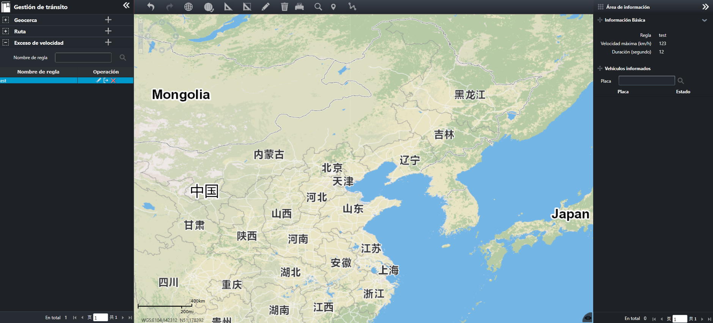

Si los parámetros de la regla de exceso de velocidad se configuran y aplican al vehículo, la velocidad de desplazamiento del
vehículo y similares estarán limitados por los parámetros de la regla de exceso de velocidad. Si el vehículo viola los parámetros
de la regla de exceso de velocidad configurada, la información de alarma correspondiente se informará a la plataforma de seguridad.
Haga clic en la barra del menú de navegación a la izquierda para entrar a la página
“Exceso de velocidad”, como se muestra en la siguiente figura.

Fig 64 Interfez de configuración de regla de exceso de velocidad